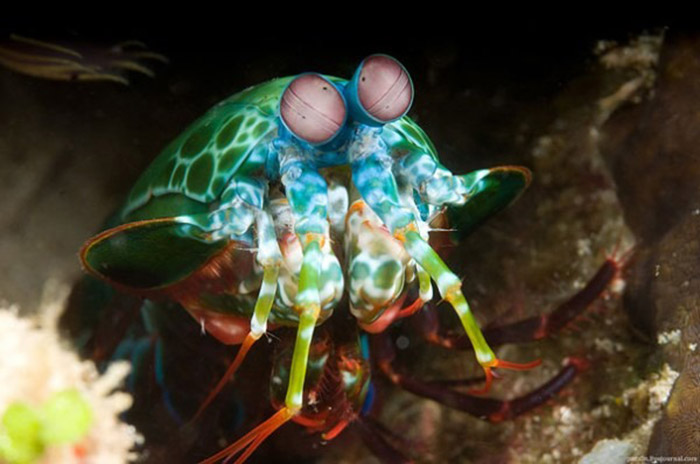

Fatos sobre o Stomatopoda
Informações Gerais
Dados Científicos
| Nome Científico: | Odontodactylus scyllarus |
|---|---|
| Reino: | Animalia |
| Filo: | Arthropoda |
| Subfilo: | Crustacea |
| Classe: | Malacostraca |
| Subclasse: | Hoplocarida |
| Ordem: | tomatopoda |

Uma máquna de matar dos mares
Não deixe essa fofura toda te enganar, esse criaturinha é uma verdadeira máquina de caos e destruição no fundo dos mares.
Suas pinças frontais atacam tão rápido que a agua ao seu redor ferve através de um processo de supecavitação, criando uma onda de choque capaz de romper até as duras cascas dos carangueijos.
Apenas para comparação, se um humano pudesse lançar uma bola de baseball com apenas um décimo dessa força ela entraria em órbita.
É tudo sobre cones
Nossos olhos possuem milhões de células que nos permitem perceber as cores, estas células são chamadas de cones.
O olho humano possui três tipos de cone receptores, que nos permtem a parcepção do azul, vermelho e verde, bem como as suas combinações e subcombinações.
O Stomatopoda Possui 16 tipos de cones, fato que lhe permite uma percepção inimaginável das cores
Referências Bibliograficas
- wikipedia
- Images from Google Photos
- "Why the Manthis-Shrimp is my new favorite animal."